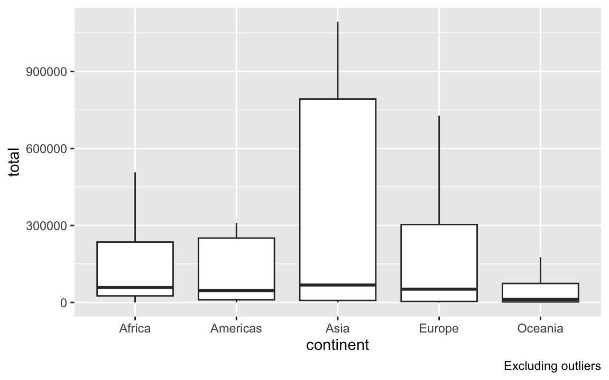

Data wrangling with dplyr (cont.)
Don’t forget to load the tidyverse package!
2016 fisheries data about capture and aquaculture harvests (in tons) by country.
Warm-up/Recap:
Write code to wrangle the data to include a variable called total_mil that represents the total harvest for each continent in millions of tons. Assign the output back into fish, so the data frame is updated to include this new variable. Only display the 10 countries with the highest total harvest, and only display the two variables of interest.
Then wrangle the data to only display the 10 countries with the highest total harvest, and only display the two variables of interest.
Joins
We also have a dataset the provides the continent for a given country:
Let’s join the two data frames together.
If we want to keep all rows from
fishfor which we have a corresponding continent and add a column for the continents:# A tibble: 9 × 6 country capture aquaculture total total_mil continent <chr> <dbl> <dbl> <dbl> <dbl> <chr> 1 Afghanistan 1000 1200 2200 0.0022 Asia 2 Albania 7886 950 8836 0.00884 Europe 3 Algeria 95000 1361 96361 0.0964 Africa 4 American Samoa 3047 20 3067 0.00307 Oceania 5 Andorra 0 0 0 0 Europe 6 Angola 486490 655 487145 0.487 Africa 7 Argentina 755226 3673 758899 0.759 Americas 8 Armenia 3758 16381 20139 0.0201 Asia 9 Aruba 142 0 142 0.000142 AmericasIf we want to keep all rows from
fishand add a column for the corresponding continent:# A tibble: 9 × 6 country capture aquaculture total total_mil continent <chr> <dbl> <dbl> <dbl> <dbl> <chr> 1 Afghanistan 1000 1200 2200 0.0022 Asia 2 Albania 7886 950 8836 0.00884 Europe 3 Algeria 95000 1361 96361 0.0964 Africa 4 American Samoa 3047 20 3067 0.00307 Oceania 5 Andorra 0 0 0 0 Europe 6 Angola 486490 655 487145 0.487 Africa 7 Antigua and Barbuda 3000 10 3010 0.00301 <NA> 8 Argentina 755226 3673 758899 0.759 Americas 9 Armenia 3758 16381 20139 0.0201 Asia
Grouping by grouped operations
Sometimes, we want to look at a given statistic or create a new variable focusing on each level of a specific categorical variable. The group_by() function tells R to treat each unique level as a separate data set.
In the following, we obtain the average total harvest (in millions of tons) per continent:
# A tibble: 6 × 2
continent mean_total_mil
<chr> <dbl>
1 Africa 0.222
2 Americas 0.522
3 Asia 3.21
4 Europe 0.384
5 Oceania 0.0874
6 <NA> 0.185 It’s always important to ungroup() after using group_by() if you’re going to continue using the data frame in future analyses! Otherwise, the grouping will carry on and could lead to potential errors in your future wrangling!
See the following example:
Notice the differences in the outputs in the following examples. We also remove the NAs:
Piping to ggplot()
Remember that when creating plots, ggplot() expects a data frame as its first argument.
We may sometimes need to wrangle data prior to visualizing it. We have two options (both have pros and cons):
- Wrangle the original data, store the resulting data frame as a new object or overwrite the previous one, and then refer to that data frame with
ggplot()
fish_joined_no_na <- fish_joined |>
na.omit()
fish_joined_no_na |>
ggplot(aes(x = continent, y = total)) +
geom_boxplot(outliers = F) +
labs(caption = "Excluding outliers") 
- Wrangle the original data, and then directly pipe the result into
ggplot(), which knows to expect a data frame as its first argument:
A note on NAs
Consider the following data frame:
na.omit() will remove ALL rows with any NA:
If we want to be more selective, we should combine filter() with is.na()